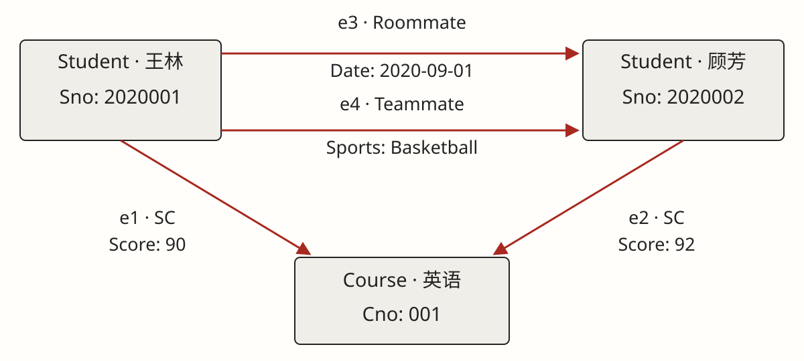

匹配一个形状
Student—SC→Course，匹配选课
选课边连接学生与课程，两跳路径找出同课同学
 VER. 2608
Built with impress.js
VER. 2608
Built with impress.js
用王林、顾芳和英语课说明属性归属与查询结果
依教材例图重绘；边的编号表示不同关系实例

成绩属于选课边 e1/e2，日期属于室友边 e3，运动属于队友边 e4
本例以学号定位学生；姓名可能重名，不作为唯一标识
| 元素 | 本例对象 | 说明 |
|---|---|---|
| 顶点 | 王林、顾芳、英语 | 共 3 个对象 |
| 边 | e1/e2 选课，e3 室友，e4 队友 | 共 4 个关系实例 |
| 标签与关系类型 | Student、Course；SC 等 | 描述对象或关系的类别 |
| 属性与值 | Score 是属性，90 是值 | 值属于具体顶点或边 |
内部标识定位图对象，业务学号标识学生；学号唯一性由约束或应用保证
王林与顾芳既是室友，又是篮球队队友
| 关系实例 | 属性 | 属性属于谁 |
|---|---|---|
| e1：王林→英语 | Score=90 | 王林这次选课 |
| e2：顾芳→英语 | Score=92 | 顾芳这次选课 |
| e3：王林→顾芳 | Date=2020-09-01 | 室友关系 |
| e4：王林→顾芳 | Sports=Basketball | 队友关系 |
本例只设一次选课；允许重修时，须用学期或选课编号区分每次成绩
本例选课箭头从学生指向课程，室友边仅选一个存储方向
| 问题 | 应怎样查 |
|---|---|
| 王林选了什么课 | 从王林沿 SC 出边到 Course |
| 谁选了英语 | 从英语沿 SC 入边回到 Student |
| 王林与顾芳是否室友 | 按室友关系语义检查两端 |
| 英语“选了”王林吗 | 反向遍历不改变关系的业务含义 |
室友关系具有对称性；图中单向存储，查询须检查关系两端
一次选课查询可组合模式匹配、沿边导航和属性过滤
Student—SC→Course，匹配选课
王林→英语←顾芳，经过两条 SC 边
在匹配结果中只留下 Score>90
输出同学学号，按查询要求去重
图与关系复合操作把选择、投影、连接和集合操作用于图匹配与导航
这里比较教材中的常见搭配，不作产品或标准现状判断
| 表示或语言 | 具体含义 |
|---|---|
| 属性图 | 点与边可带属性；e1 上有 Score=90 |
| RDF | 资源描述框架：以主语—谓语—宾语表达事实 |
| SPARQL | 用图模式查询 RDF 数据 |
| Cypher | 写出属性图中的顶点、边与路径模式 |
| Gremlin | 以遍历步骤组织图访问 |
语言支持范围随系统而异；查询须符合所选系统的语法与语义
下面用简写标识说明事实，不是完整 RDF 文件
| 主语 | 谓语 | 宾语 |
|---|---|---|
| student:2020001 | 选修 | course:001 |
| student:2020001 | 姓名 | 字符串“王林” |
| course:001 | 课程名 | 字符串“英语” |
course:001 标识课程对象；“英语”是课程名，重名课程须用不同标识区分
本例王林学号 2020001，顾芳学号 2020002
01
02
03MATCH (n:Student)-[e:SC]->(c:Course)
WHERE n.Sno = "2020001"
RETURN c.Cname, e.Score| c.Cname | e.Score |
|---|---|
| 英语 | 90 |
n/e/c 是变量；Student/Course 是标签，SC 是关系类型；Sno/Cname/Score 是属性
继续只查询王林；其唯一选课成绩为 90
| 条件 | 结果 | 原因 |
|---|---|---|
| n.Sno="2020001" | 英语，90 | 找到王林的选课 |
| 再加 e.Score>90 | 无结果行 | 90 不大于 90 |
| 改为 e.Score>=90 | 英语，90 | 90 满足包含边界的条件 |
| 改查顾芳且 Score>90 | 英语，92 | 顾芳是另一个学生 |
Score>90 排除了王林的记录；空结果表示没有匹配行，成绩 0 则是具体值
从王林沿出边到英语，再沿入边到其他学生
01
02
03MATCH (n:Student)-[:SC]->(c:Course)<-[:SC]-(m:Student)
WHERE n.Sno = "2020001" AND m.Sno <> n.Sno
RETURN DISTINCT m.Sno, m.Sname| m.Sno | m.Sname |
|---|---|
| 2020002 | 顾芳 |
同课关系由两条 SC 边推导，图中未存直接“同学”边
独立扩展：两人又都选了课程 002“数据库”，其余事实不变
| 匹配路径 | 输出同学 |
|---|---|
| 王林→英语←顾芳 | 2020002，顾芳 |
| 王林→数据库←顾芳 | 2020002，顾芳 |
两条匹配路径输出两行顾芳；按学号、姓名 DISTINCT 后得到一名同学
学生表与选课表保存同一组事实，SQL 返回同一位同学
01
02
03
04
05SELECT DISTINCT m.Sno, m.Sname
FROM SC a JOIN SC b ON a.Cno = b.Cno
JOIN Student m ON m.Sno = b.Sno
WHERE a.Sno = '2020001'
AND b.Sno <> a.Sno;a/b 是 SC 的两个别名；按同一课程连接并排除自己，结果为顾芳
用简化存储路径说明教材中的原生图存储思路
| 阶段 | 具体工作 |
|---|---|
| 找到起点王林 | 可借助学号索引或其他定位机制 |
| 访问相邻关系 | 沿邻接信息读取相关边与顶点 |
| 检查关系与属性 | 区分 SC/Roommate，核对成绩条件 |
| 输出或继续展开 | 读取、过滤、去重并传输结果 |
邻接记录可能分散存放并产生 I/O；查询性能须结合负载与实现比较
独立树形例：每点有 100 个不同后继，三层没有重复顶点
| 层数 | 本层到达顶点数 | 累计到达数 |
|---|---|---|
| 第 1 跳 | 100 | 100 |
| 第 2 跳 | 10 000 | 10 100 |
| 第 3 跳 | 1 000 000 | 1 010 100 |
本例第三跳到达 100 万个顶点；查询须限定关系类型、方向、深度与结果范围
独立好友例：A→B、B→A，询问从 A 出发能到达谁
记录已访问顶点，避免 A/B 反复展开
明确最多几跳，超过边界停止
允许重复顶点和边时，可无限绕 A→B→A
定义按边数还是权重，以及是否存在并列结果
重复顶点、重复边和最短路径的度量须在查询语义中明确
关系属性记录事实，查询方向、过滤和去重决定返回行
选课成绩、室友日期、队友运动
学号定位、方向、> 与 >=、排除自己
同一学号、姓名的结果合并为一行
核对定位、邻接、扩张成本与约束
第 15.3 节按时间戳把设备记录归入窗口并聚合